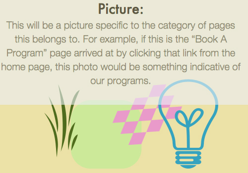

Book A Program
Here is a free floating text area below the photograph. Notice that there are no frames anywhere.
The links in the left hand column would be specific to this inside area. For example, if this is inside the “Book-A-Program” link from the home page, then the links on the left would likely be ones to information about other programs and how to schedule them, etc.
Learn about Explorit's many offerings for kids, adults, teens, families, teachers and anyone who's curious about the world around them.